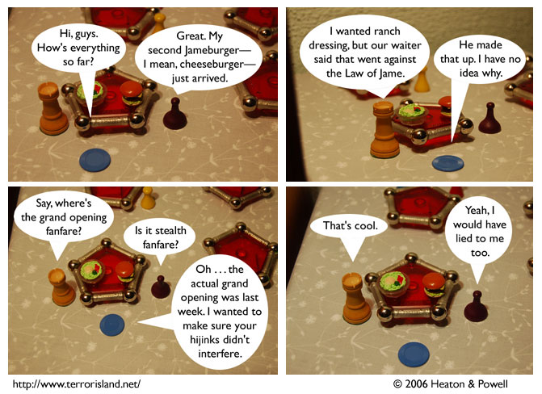

Strip #44
— Friday, September 22, 2006
Every good restaurant has a waiter who makes life more interesting by citing fictional laws.
Notes, Thoughts, &c.
Ben’s Notes
Here are the things I like about the way this strip turned out:
- The em-dashes in panel 1 both fell at the ends of lines, which looks kind of interesting.
- I managed to arrange Jame’s line in panel 3 into a fairly good ellipse, which is tricky for seven-deck speech bubbles.
- The first two panels each hide one of the food items, and the last two panels display them fully.
Lewis’s Notes
Some of you might wonder what aspects of the script Ben brings to the comic, and what aspects I bring to it. You can extrapolate from the following.
If Ben wrote the comic alone, it would be about medieval mathemeticians, and disputes they had. If I wrote the comic alone, it would be the story of Metal Hands McGee, a super hero who wears metal gauntlets that produces the sound effect “Catamo”. Terror Island is the result of mixing those two comic visions.